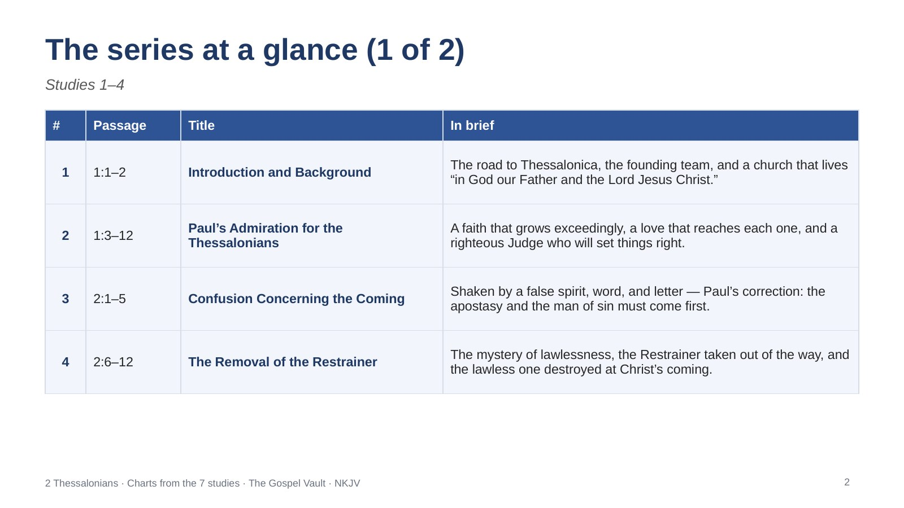
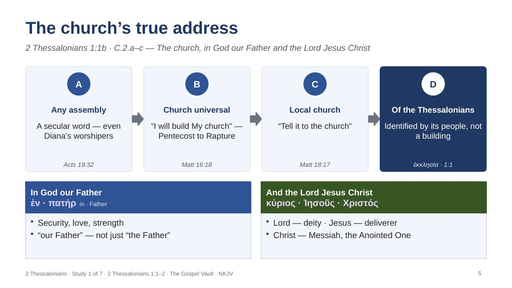
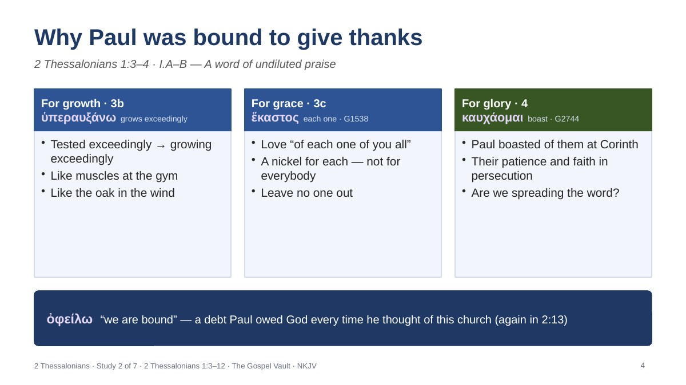
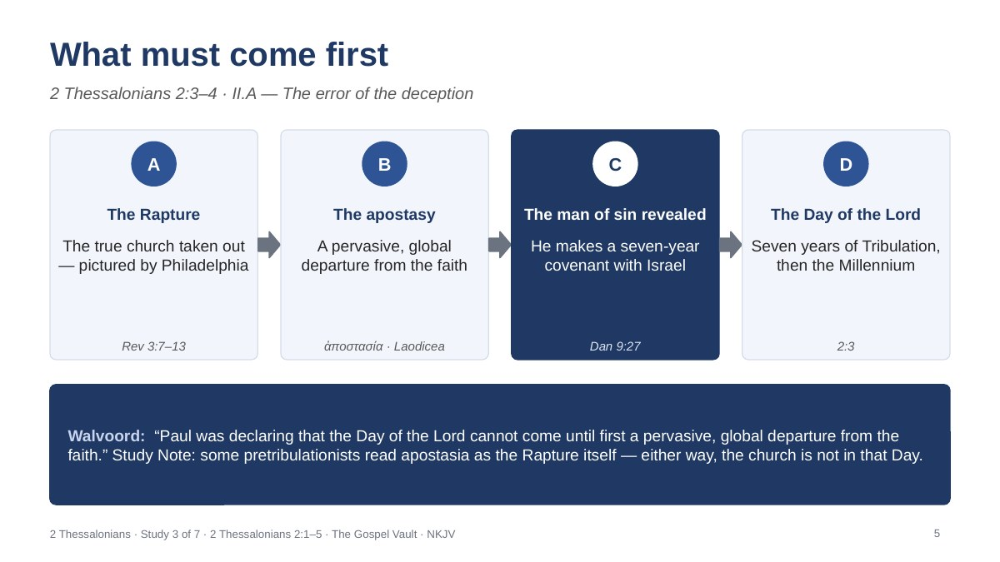
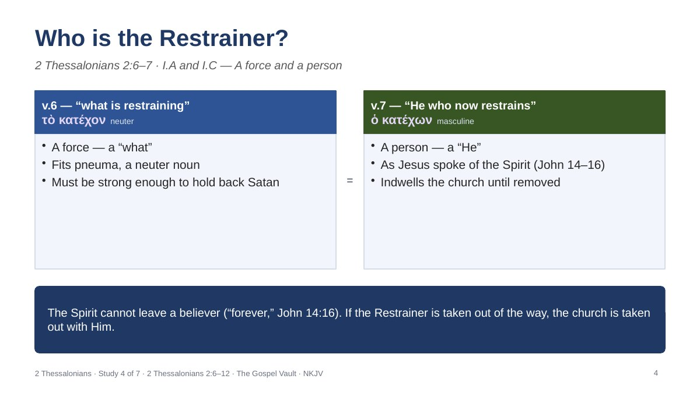
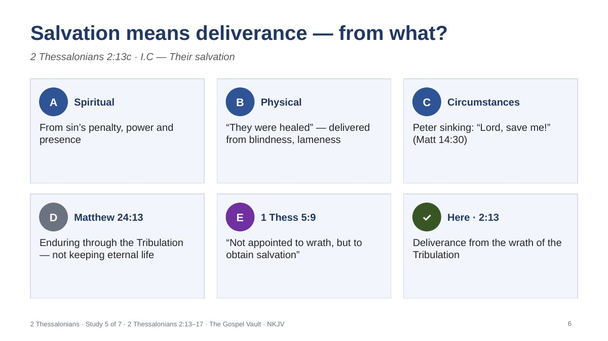
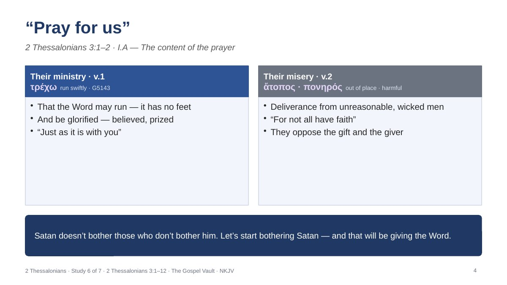
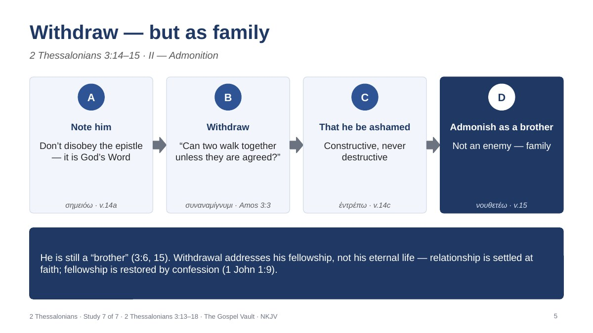

Vault 3 · NT Book Studies · 2 Thessalonians
Chart decks for leaders teaching the seven-part 2 Thessalonians series — one deck for each study, plus a full-series deck that gathers them all. Download each as a PDF to read or print, or as an editable PowerPoint to teach from. Every slide carries leader notes.
For a group meeting, use that week’s study deck. Each one opens with the study’s title and a map of where it sits in the letter, then walks through the charts, and closes with two discussion questions, two applications and a one-line summary from the study. The full-series deck gathers all seven in order for leaders who want everything in one file. Every chart stays within the commentary posted for its study, with Greek words drawn from the study’s Greek word study.

Every chart from the seven studies in study order — one section per study, each opening with its title slide and closing with questions, applications and a summary line — plus the series at a glance.

The road to Thessalonica, the founding team, and a church that lives “in God our Father and the Lord Jesus Christ.”

A faith that grows exceedingly, a love that reaches each one, and a righteous Judge who will set things right.

Shaken by a false spirit, word, and letter — Paul’s correction: the apostasy and the man of sin must come first.

The mystery of lawlessness, the Restrainer taken out of the way, and the lawless one destroyed at Christ’s coming.

Chosen, set apart, and appointed to deliverance — so stand fast and hold the apostolic Word.

Wait on the Lord in prayer and wait for the Lord in work — the Word must run, and idleness must not become meddling.

Am I my brother’s keeper? Don’t grow weary in doing good, admonish as family, and rest in the Lord of peace.